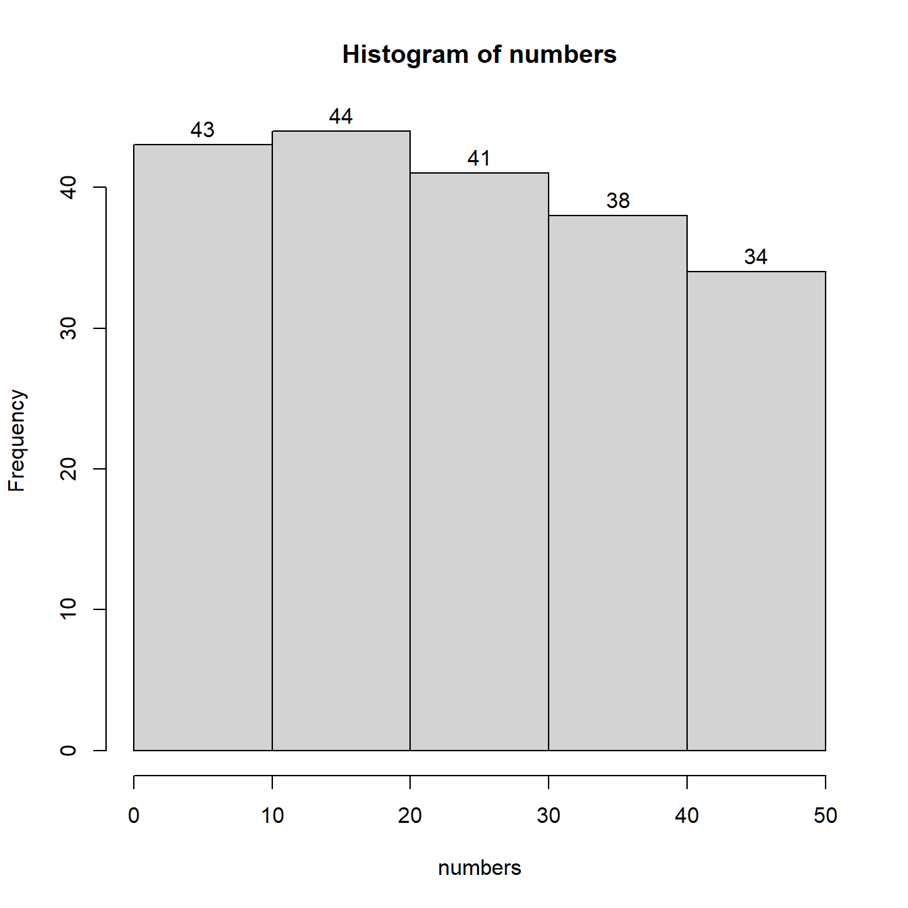
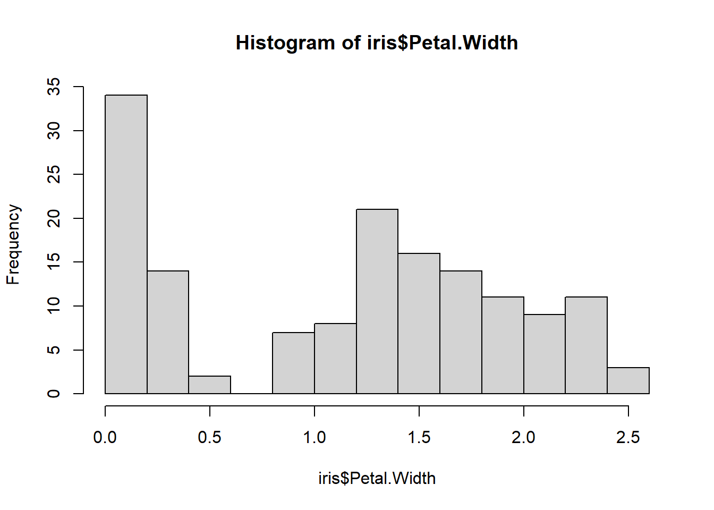

Session 4 Packages
4.1 What we have learnt so far
In the first two labs (Week 2 and Week 3) we learnt about variables, vectors, and operators. Furthermore, we were introduced to the used of functions and their arguments. These were the fundamental steps that we had to take before we can start carrying out statistical tasks. In the last lab session, we began exploring some basic statistical tasks such as creating grouped frequency tables and histograms. These steps, even though simple, they allowed us to develop a sense of our data. Creating visual representations of our data is one of R’s strongest aspects. For the time being we only practiced with hist() and pie(), however as we become more confident with R we will also explore some additional features that R packages can give us.
R in its core installation has a number of useful functions. However, these functions do not cover all the possible tasks we would wish to perform. In order to overcome this weakness R allows us to install and use additional packages. These packages are more specialised than the core R and can provide us with numerous new statistical tools. Today we will learn how to install and use such packages and see how they can provide us with useful new features. We will also see a number of examples of how to use R to acquire the mean, median, and mode of a sample. Finally, in order to make things more interesting we will use some experimental data that R offers by default. So today we will not be generating datasets comprised of random data. Instead we will be using some of the built-in datasets.
4.2 Learning objectives
- Installing R packages
- Calling R packages
- Use core R and packages to find measures of central tendency
4.3 Let’s get started
If you are working on RStudio Cloud skip to step 1 below
- For this session you will need to create a new project in RStudio. Run RStudio and create a new project by clicking on File >> New Project … .Then select New Directory and then New Project. Use “packages” as a Directory name. Click Browse and make sure you place that folder in your “R training” folder that you created on your Desktop.Click “Create Project” to finalise creating your new project.
- Now create a new script from File >> New File >> R Script. Save your new script under the name session3.
One of the built-in datasets that R offers for free is called ToothGrowth. The ToothGrowth data set contains the result from an experiment studying the effect of vitamin C on tooth growth in 60 Guinea pigs. Each animal received one of three dose levels of vitamin C (0.5, 1, and 2 mg/day) by one of two delivery methods, (orange juice (OJ) or ascorbic acid (a form of vitamin C and coded as VC). Even though this dataset is not the result of Psychological research it does have the structure of a data file from Psychological research where we administer an intervention in three different dosages and two different methods. Let’s see how we can explore this dataset.
In your new script type and run the following:
This informs R that we want to work with the build-in dataset called “ToothGrowth”. If you have a look at your Environment you will now see under the section called Data an object called ToothGrowth. You will also see some additional information, it has 60 observations and 3 variables. If you also move your mouse pointer on top of ToothGrowth and leave it there you will get a tooltip window informing you that this is a data.frame. For now you can consider a data.frame as a table that contains information for more than one variables. If you click once on ToothGrowth then RStudio will open and display this data.frame for you. You can see it in a new tab that opened next to your script. You can see it has three columns, one per variable. The top row includes the variable names. len is the variable that contains information on the tooth growth, supp is the variable that contains information on the vitamin supplement used, and dose is the variable that describes the dosage that was administered.
If you type and run each the following commands one at a time you will see each variable displayed in your console:
So if I want to work with one of the variables in a dataset I can call it by typing the name of the dataset, then type the $ symbol, and in after that type the name of the variable.
Exercise 1 Try to create a histogram for the variable len of the dataset ToothGrowth. If you are not certain how to do this you can check the solution at the end of this pdf
4.4 Measures of Central Tendency
Let us know see how we can use R functions to calculate the mean, median, and mode for a variable. If we want to find the mean of a variable we can use the function mean(). Similarly, if we want to find the median, we can use the median() function. Let’s see them in practice for the variable len of the Toothgrowth dataset.
# the following command will calculate the mean of len
mean(ToothGrowth$len)
# the following command will find the median value of len
median(ToothGrowth$len)You can see now how with one line of code we can find in an instant a figure that would have taken us much more time and energy to calculate by hand.
Now let’s see if we can also find the mode in a similar way. Try the following command and see what happens.
You probably got the answer “numeric”. This is because the function mode() corresponds to a different task that what we hoped it would perform. Actually, the core installation of R does not have a function that can find the mode value of a variable. However, as we said earlier this is not a problem as we can install and run external packages that can add additional functionalities.
4.5 Adding a new package
In order to have a function that can find the mode of our sample we need to install a new package called DescTools. We do that by clicking Tools in the menu and then Install Packages…. Then where it says packages type in DescTools and click Install. If you are promtped with any questions then click on Yes. RStudio will download and install everything automatically and you should be ready to go once you can see the > symbol in the console. Once you install a package you can use it in all future projects and scripts without the need to re-install it. Now we can tell R that we want to use this package in our script by adding and running the following command:
As a good practice we tend to declare the packages we want to use at the top of our scripts. We also need to include the command library(DescTools) only once per script, if we need it at all. Now we have the necessary function to find the mode of len by calling the function Mode() that comes with the package DescTools. Add the following command and run it to get the mode.
You should get the following output:
## [1] 26.4
## attr(,"freq")
## [1] 4This means that your mode is 26.4 and it has a frequency of 4.
4.6 To sum up
As we progress through our course we will be using specific packages and functions. You do not need to memorise the packages names. We will be providing those for you. You will also not need to memorise the names of the functions for this term. We will be providing those too.
4.7 Additional Exercises (spoiler alert: if you get stuck the answers are at the end of the pdf)
Another dataset that comes build-in with R is called iris. iris dataset gives the measurements in centimeters of the variables sepal length, sepal width, petal length and petal width, respectively, for 50 flowers from each of 3 species of iris. The species are Iris setosa, versicolor, and virginica. The following exercises should be completed in one script and are in practice one exercise. They are broken down to smaller questions to make your work easier, as well as making it easier to refer to the solutions in the end.
Exercise 2 Create a new script and name it week 4 iris. Then type in and execute the right command in order to load the dataset iris
Exercise 3 Explore the data.frame called iris (you can find it in your Environment). You should be able to see that some of the included variables are Sepal.Length, Sepal.Width, Petal.Length, and Petal.Width. Write the right code that would create one histogram for each of the above variables. Do spend some time to observe each histogram and think about how the scores are distributed and whether we have skewed distributions. (CAUTION: In R upper case and lower case letter do matter, make sure to type them exactly as you see them)
Exercise 4 Type the right code in order to get the mean and the median for all the above variables.
Exercise 5 Type the right code in order to get the mode for all the above variables. (Hint: do not forget the library and remember the importance of upper case letters.) .
.
.
.
.
.
.
.
.
4.8 Solutions: SPOILER ALERT
Exercise 1

Exercise 2
Exercise 3



Exercise 4
mean(iris$Sepal.Length)
## [1] 5.843333
mean(iris$Sepal.Width)
## [1] 3.057333
mean(iris$Petal.Length)
## [1] 3.758
mean(iris$Petal.Width)
## [1] 1.199333
median(iris$Sepal.Length)
## [1] 5.8
median(iris$Sepal.Width)
## [1] 3
median(iris$Petal.Length)
## [1] 4.35
median(iris$Petal.Width)
## [1] 1.3Exercise 5